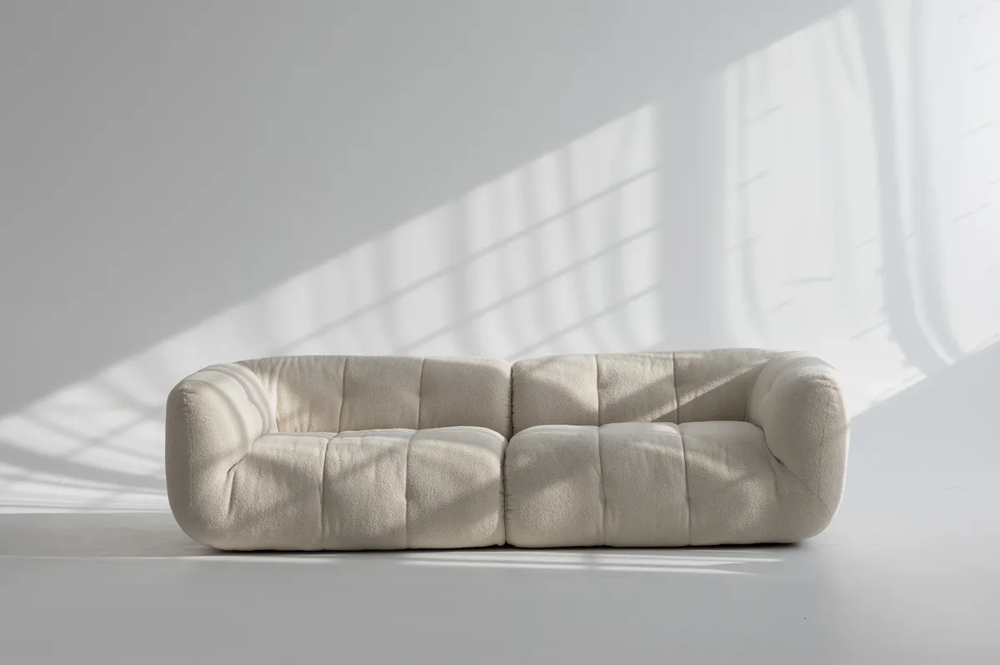
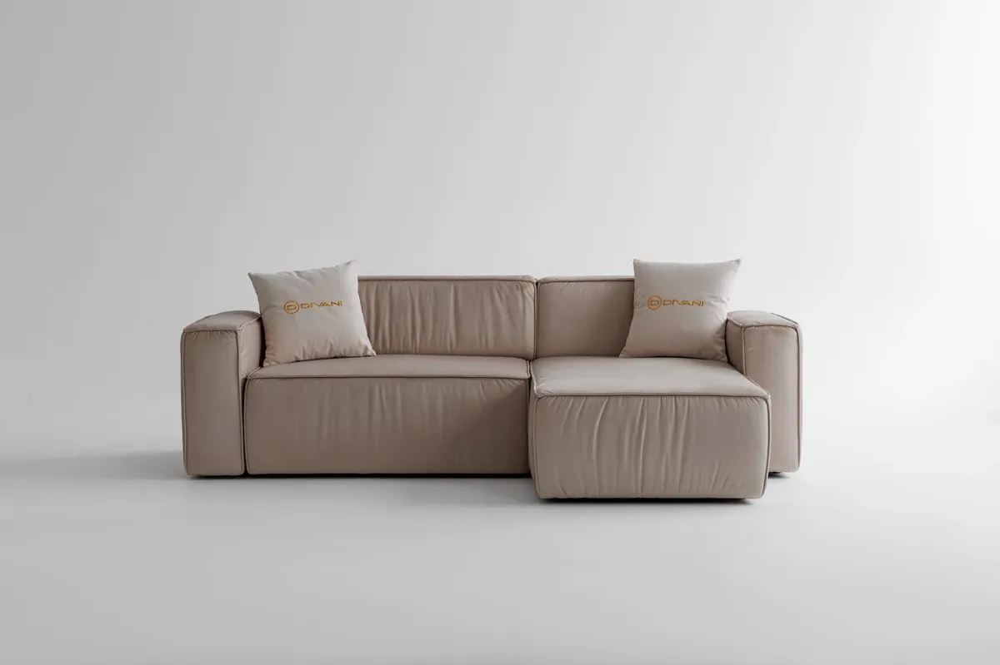

Introducere
Imaginați-vă o seară confortabilă: afară s-a întunecat, stați cu o ceașcă de ceai fierbinte, înfășurat într-o pătură moale, iar în jurul vostru se află o canapea modulară confortabilă, pe care întreaga familie se poate așeza cu ușurință.
Canapelele modulare nu sunt doar mobilier, ci un element de confort și practicitate în casa dumneavoastră. Ele permit adaptarea spațiului la orice nevoie, fie că e vorba de întâlniri de familie, reuniuni cu prietenii sau o ședință de lucru.
Puțină istorie
Ideea mobilierului modular a apărut încă de la mijlocul secolului XX, când designerii au început să experimenteze cu interioare transformabile. Unul dintre pionieri este considerat designerul italian Mario Bellini, care în 1970 a creat modelul iconic „Camaleonda”.
Avantajele canapelelor modulare
Unul dintre principalele avantaje este flexibilitatea. Când primiți musafiri pe neașteptate, nu căutați scaune suplimentare: extindeți sau rearanjați modulele și toată lumea se simte confortabil.



Ușurința de mutare e un alt avantaj. Canapeaua se descompune în secțiuni separate, care pot fi transportate chiar și cu liftul, iar decorul camerei se schimbă fără efort.
Vezi modelele modulare Di'vani
Toate modelele modulare sunt expuse în showroom-uri, unde poți încerca mai multe configurații înainte de comandă.